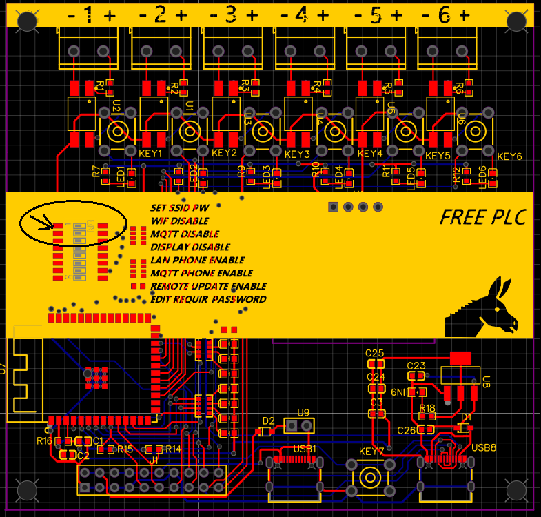

(1) Set dip switch in SSID and PW in on position
(2) USe serial port porgram, like Arduino IDE putty or any serial port program to link up the PLC.
(3) Select proport comport channel, press reset button, your should screen as below:
(3) After input SSID and password,screen will become as below:
Return the setup DIP switch to normal, if SSID and password correct, PLC will link to network. When press reset, the screen will show URL like 192.168.x.x, take down the URL for start program
Use browser to open PLC interface screen, as The URL is not secure https, warning will appear.